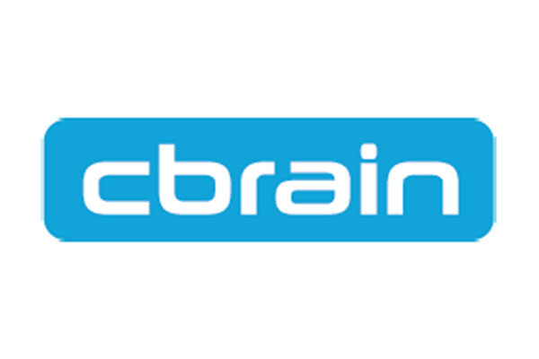
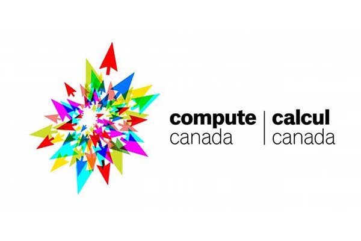
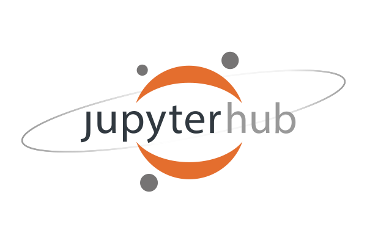

Boutiques
Boutiques is a tool to automatically publish, integrate, and execute applications across computational platforms. Boutiques applications are summarized in a simple yet rich JSON description, and enable the simulation, validation, evaluation, and application-specific monitoring of command-line tools.
Boutiques Website

CBRAIN
CBRAIN is an infrastructure that connects researchers and data from all walks of science to high performance and cloud computing in an easy to manage, reproducible, and user-friendly manner.
CBRAIN Website

Compute Canada
Compute Canada enables Canadian researchers who need Advanced Research Computing (ARC) strategies in all disciplines and at all scales; from individual researchers to some of the largest international research collaborations in the world.
Compute Canada Website
Datalad
DataLad is a software tool developed to aid with everything related to the evolution of digital objects. It not only keeps track of code, data, and making sharing, retrieving and linking (meta-)data easy, but it assists with the combination of all things necessary in the digital workflow of data and science.
Datalad Website

LORIS
The Longitudinal Online Research and Imaging System (LORIS) is a web-based data and project management software for neuroimaging research studies. It is an open source framework for storing and processing behavioural, clinical, neuroimaging and genetic data. LORIS also makes it easy to manage large datasets acquired over time in a longitudinal study, or at different locations in a large multi-site study.
LORIS Website
OSF
OSF is a free and open source project management tool that supports researchers throughout their entire project lifecycle as a collaboration tool and workflow system.
OSF Website

JupyterHub
JupyterHub brings the power of notebooks to groups of users by providing access to computational environments and resources without the burden of installation and maintenance tasks. Users - including students, researchers, and data scientists - can get their work done in their own workspaces on shared resources which can be managed efficiently by system administrators.
JupyterHub Website